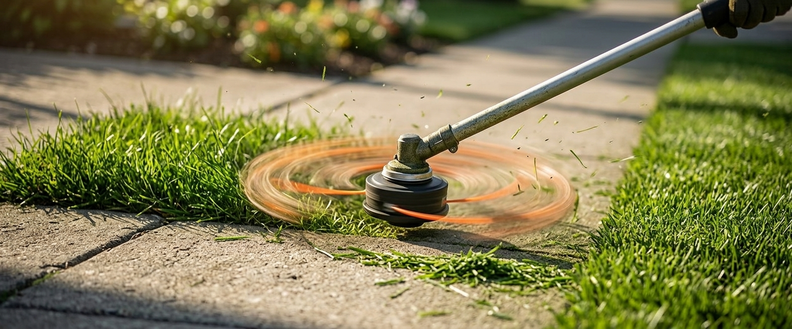
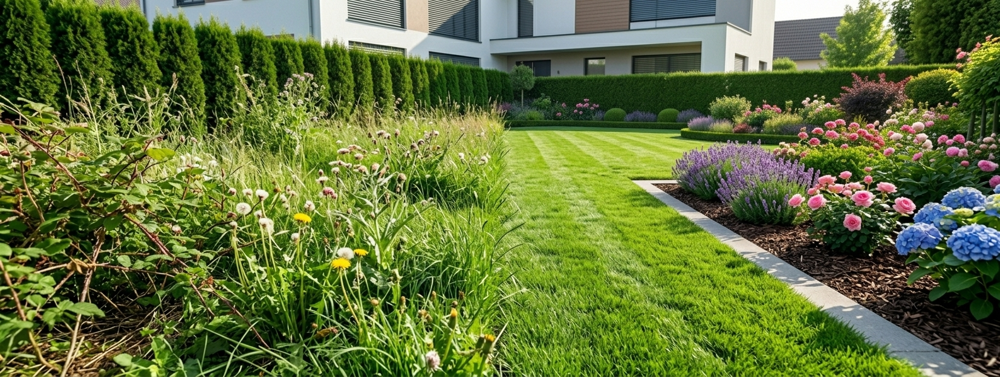
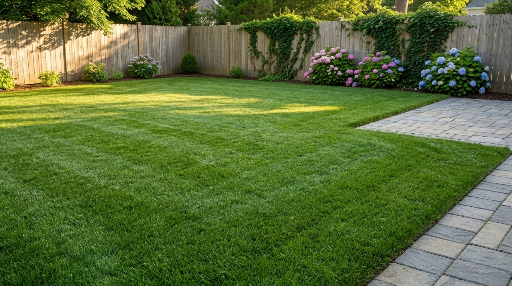
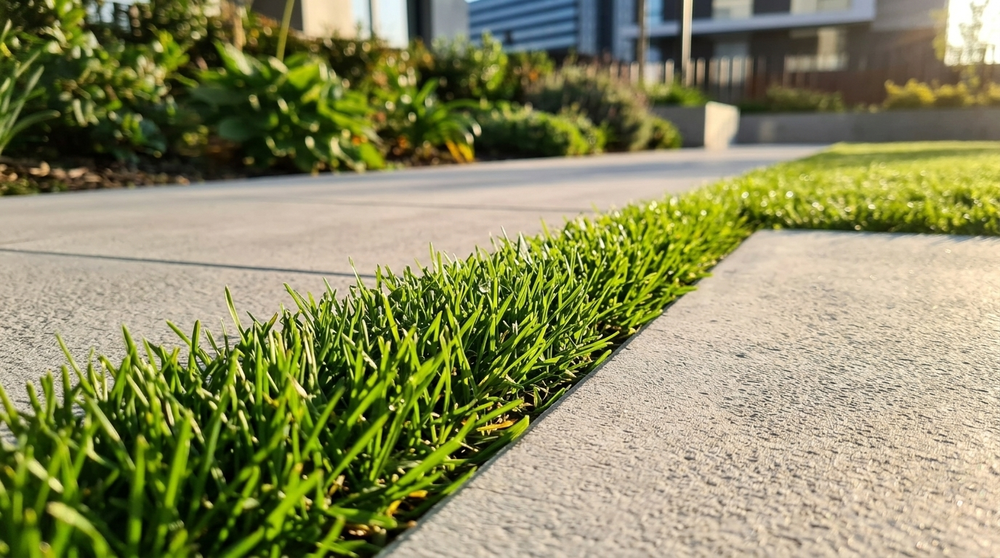

Podado Residencial Básico
Corte uniforme en patios, jardines frontales y traseros. Mantenemos la altura ideal para fortalecer la raíz, conservar la humedad y lograr un tono verde vivo.
Cuidamos el pasto de tu hogar con cortes limpios, maquinaria calibrada y atención directa. No manejamos horarios fijos al público: trabajamos exclusivamente previa cita para dedicarle el tiempo necesario a tu espacio.

Adaptamos la altura de corte y el tipo de trabajo según las condiciones actuales de tu jardín.

Corte uniforme en patios, jardines frontales y traseros. Mantenemos la altura ideal para fortalecer la raíz, conservar la humedad y lograr un tono verde vivo.

Delineado preciso en los límites con banquetas, guarniciones, jardineras y muros para dar un acabado limpio, simétrico y arquitectónico a todo el contorno.

Intervención por etapas para jardines descuidados o con pasto muy crecido. Incluye desbroce controlado, nivelación gradual y recolección del residuo vegetal.
Sin trámites complicados, sin anticipos y con comunicación directa desde el primer mensaje.
Envía por WhatsApp una fotografía de tu jardín o las medidas aproximadas del área para darte un presupuesto claro y sin compromiso.
No contamos con horarios fijos de apertura; coordinamos juntos el día y la hora exacta según tu disponibilidad y nuestra ruta semanal.
Revisas el acabado de tu césped y realizas el pago en efectivo en persona únicamente cuando el trabajo está terminado a tu satisfacción.